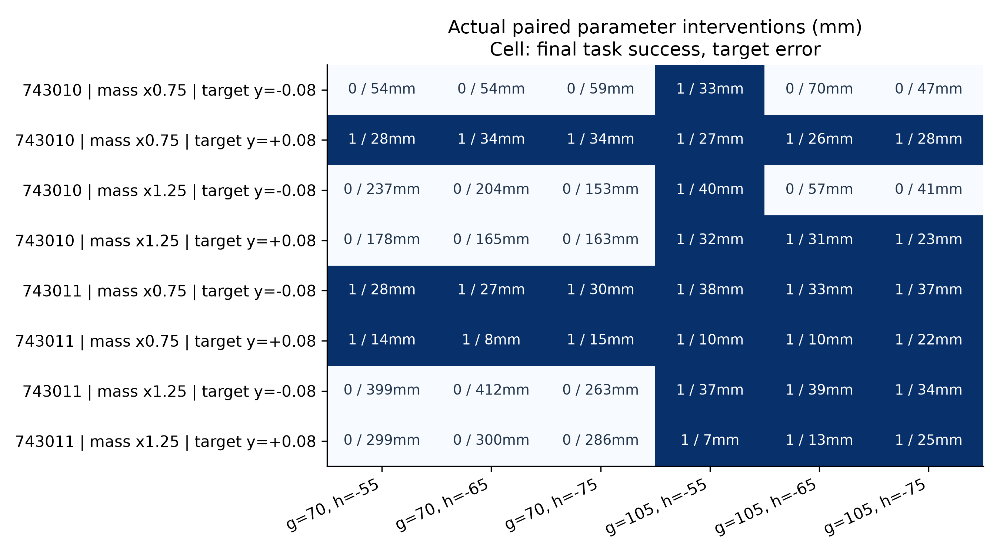

ARES · EXP-003 · 2026-11-01真实技能执行之后，
重新规划一定更好吗？
本轮完成独立复算、原始STAP算法核执行、双技能物理模型训练与多轮强控制诊断。224条真实物理执行 / 22400控制步 / 5600优化步。没有新RL方法正结果，也没有实机操作。
完整研究结论 · STAP对应与边界 · 逐例数据和成本 · 复现 · 原始包SHA · 视频验收
01 · 最重要的结果
| 方法 / 控制 | 完整任务成功 | 解释 |
|---|
| 最强追加固定参数 | 4 / 8 | 100mm grasp，−65mm hook；开发控制 |
| 普通Fitted Q / Foresight类比 | 3 / 8；3 / 8 | 同64条真实数据；单训练seed |
| STAP原计划 / 实测后验重规划 | 6 / 8 → 3 / 8 | 完全相同前段，3退化、0救回 |
| 后验重规划 + 预算保护 | 4 / 8 | 确定性强控制增益，不是RL创新 |
| 增量状态模型：原计划 / 重规划 | 4 / 8；3 / 8 | 预测更准，任务收益未改善 |
只有两个训练scene、两个新开发scene和一个训练seed。STAP是既有方法主对标；6/8不能作为ARES原创贡献。所有结果保留失败与不同native/task判据。大CEM随机流未严格配对的探索另列，未混入因果消融。
02 · 相同前段，后验修正造成退化
左：保留合法原计划；右：使用实测SkillResult重新选择hook。两个真实前段逐记录相等。选择不同hook后，几何yaw与执行耗时改变，右侧未在100步内完成拉动。
打开逐帧联动审查 → · 完整原版 · 独立机制曲线 · 学术图注
MEASURED_POSE_REPLAY：从真实物理轨迹重渲染，零新增物理步。彩框是实测cube几何投影，黄圈是声明目标容差，不是接触力标记。
04 · 参数、模型与真实物理后果

每格为一次真实执行，不是价值模型预测。固定105mm/−55mm在训练上下文中全部成功；目前尚未证明抓点需要随任务改变。
DATA_DERIVED_PLOT。状态增量预测减少位置误差，但没有改善完整任务成功。后验价值校准和执行预算需分别解决。